ch1.kris_room.kris_s_roomkris_room ｜ room 2bg_myroom ｜ EXISTS房间自带真背景
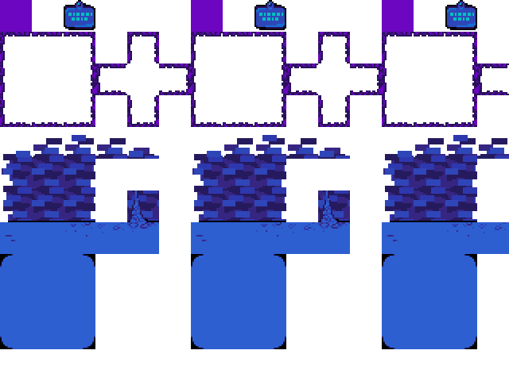
ch1.unknown.unknownunknown ｜ room 35bg_darkfield_tiles ｜ EXISTS区域代表素材
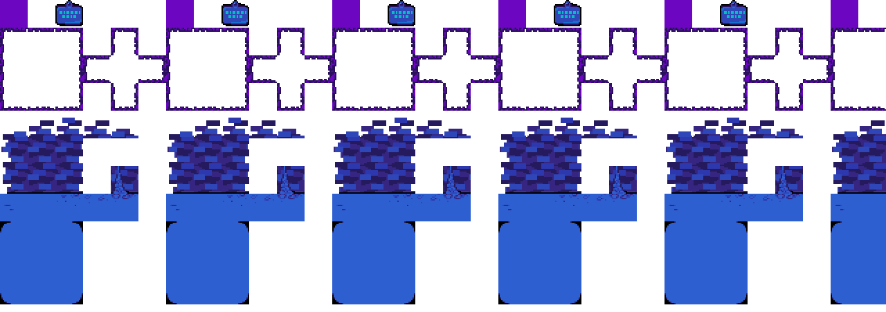
ch1.eye_puzzle.eye_puzzleeye_puzzle ｜ room 40bg_darkfield_tiles ｜ EXISTS区域代表素材

ch1.castle_town.castle_towncastle_town ｜ room 45bg_darktown ｜ 640x1160(原图)房间自带真背景
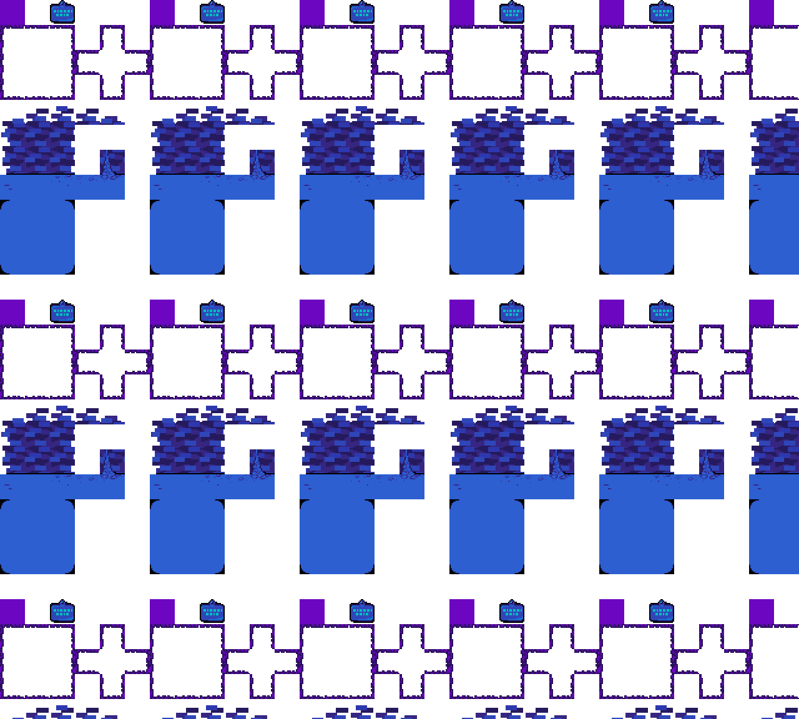
ch1.field.field_great_doorfield ｜ room 49bg_darkfield_tiles ｜ 1280x1152区域代表素材
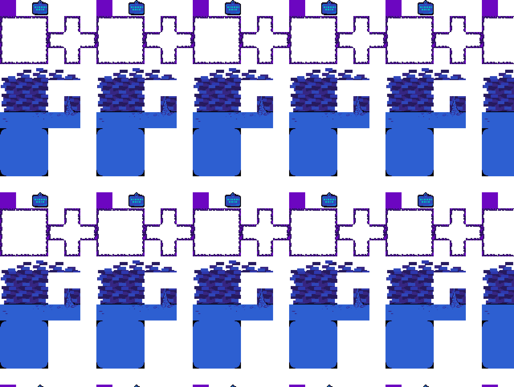
ch1.field.field_maze_of_deathfield ｜ room 56bg_darkfield_tiles ｜ 1280x966区域代表素材

ch1.field.field_seams_shopfield ｜ room 59bg_darkfield_tiles ｜ 1280x960区域代表素材

ch1.field.field_great_boardfield ｜ room 68bg_darkfield_tiles ｜ 1280x960区域代表素材

ch1.field.field_great_board_2field ｜ room 71bg_darkfield_tiles ｜ 1280x960区域代表素材

ch1.forest.forest_entranceforest ｜ room 73bg_darkforest_tiles ｜ 1280x960区域代表素材

ch1.forest.forest_bake_saleforest ｜ room 82bg_darkforest_tiles ｜ 1280x640区域代表素材
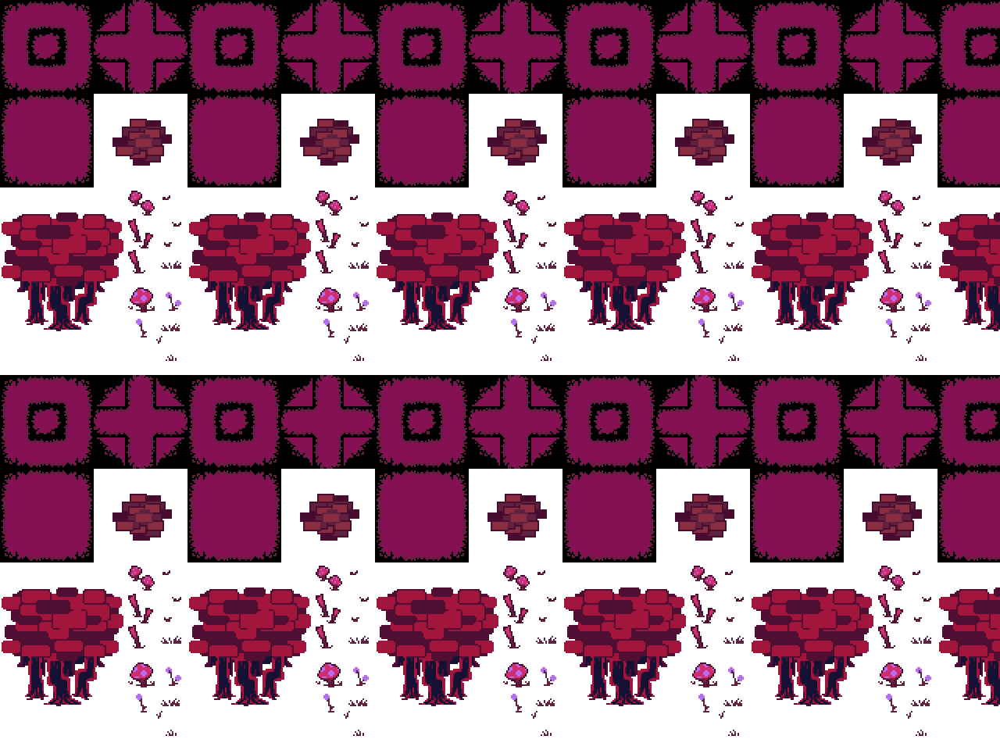
ch1.forest.forest_before_mazeforest ｜ room 90bg_darkforest_tiles ｜ 1280x960区域代表素材

ch1.forest.forest_after_mazeforest ｜ room 96bg_darkforest_tiles ｜ 1280x960区域代表素材
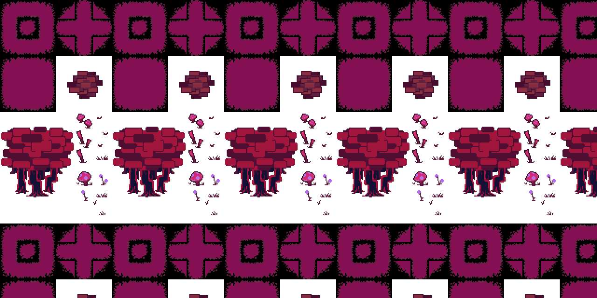
ch1.forest.forest_thrashing_roomforest ｜ room 97bg_darkforest_tiles ｜ 1280x640区域代表素材
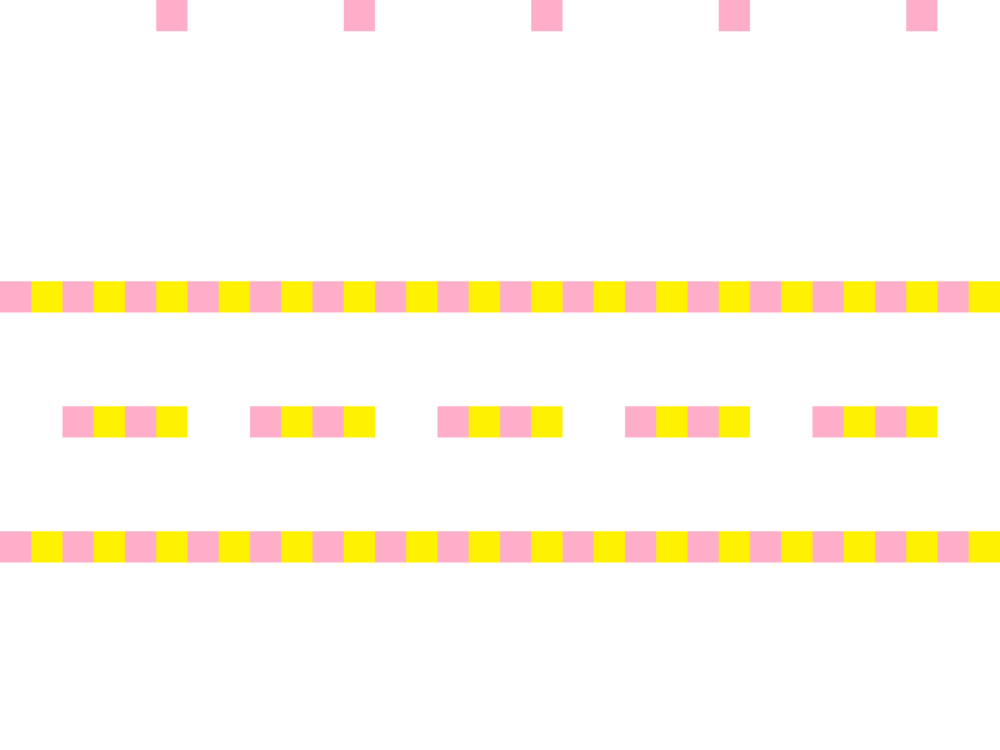
ch1.card_castle.card_castle_prisoncard_castle ｜ room 107bg_cctiles ｜ 1280x960区域代表素材
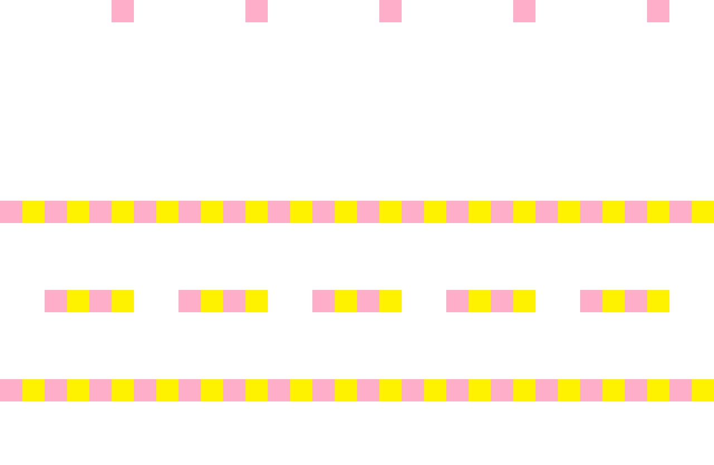
ch1.card_castle.card_castle_unknowncard_castle ｜ room 111bg_cctiles ｜ 1280x834区域代表素材
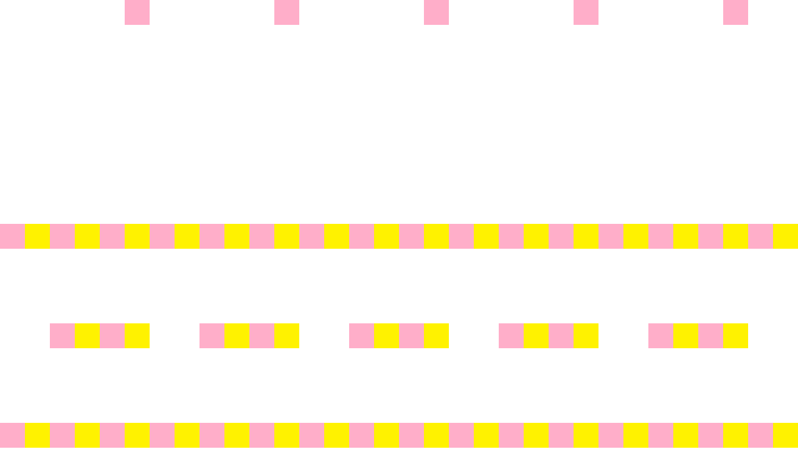
ch1.card_castle.card_castle_1fcard_castle ｜ room 114bg_cctiles ｜ 1280x751区域代表素材
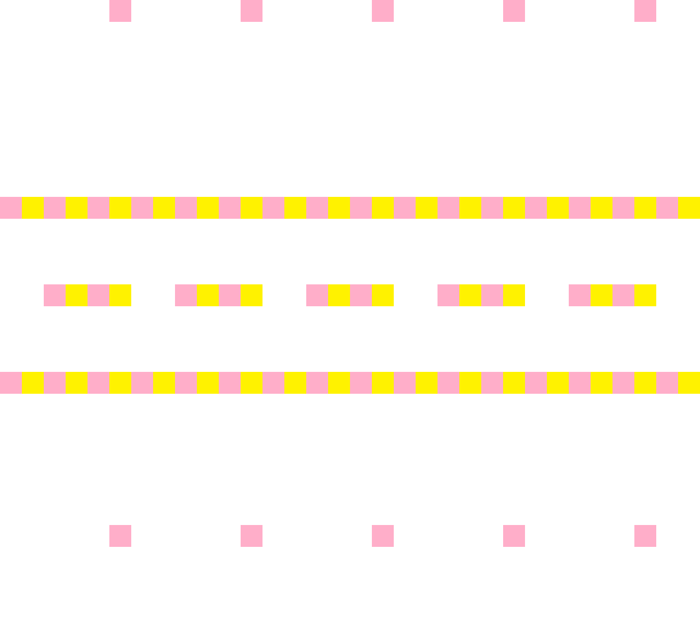
ch1.card_castle.card_castle_5fcard_castle ｜ room 123bg_cctiles ｜ 1280x1152区域代表素材

ch1.card_castle.card_castle_thronecard_castle ｜ room 126bg_cc_throneroom ｜ 640x800(原图)房间自带真背景

ch2.kris_room.kris_s_roomkris_room ｜ room 18bg_myroom ｜ 320x240(原图)房间自带真背景

ch2.castle_town.castle_towncastle_town ｜ room 55bg_darktown ｜ 640x1160(原图)房间自带真背景

ch2.castle_town.castle_town_2castle_town ｜ room 61bg_darktown ｜ 640x1160(原图)房间自带真背景

ch2.my_castle_town.my_castle_townmy_castle_town ｜ room 62bg_darktown ｜ 640x1160(原图)区域代表素材
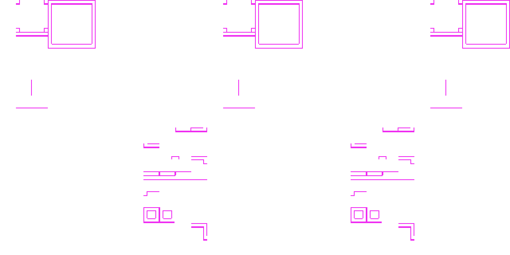
ch2.cyber_field.cyber_field_entrancecyber_field ｜ room 78bg_dw_cyber_battle_tiles ｜ 1280x640区域代表素材

ch2.cyber_field.cyber_field_arcadecyber_field ｜ room 83bg_dw_cyber_battle_tiles ｜ 1280x960区域代表素材
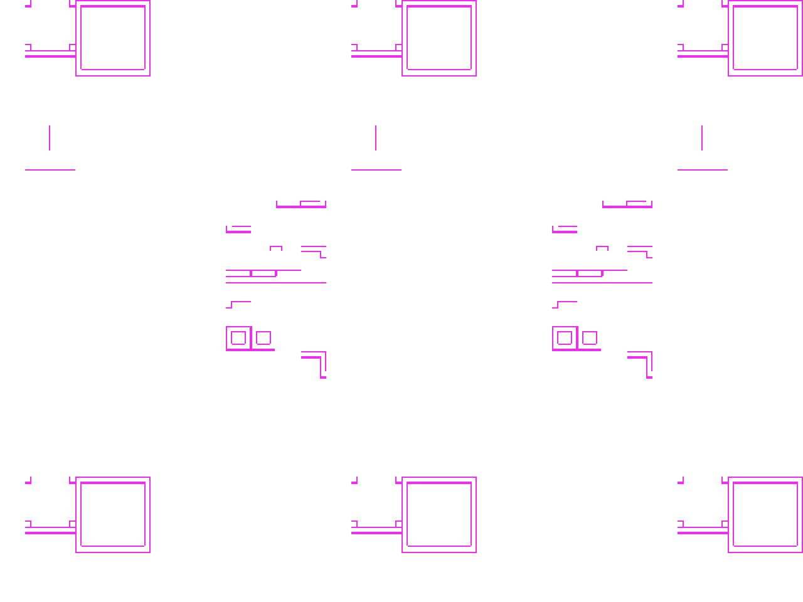
ch2.cyber_field.cyber_field_music_shopcyber_field ｜ room 89bg_dw_cyber_battle_tiles ｜ 1280x960区域代表素材
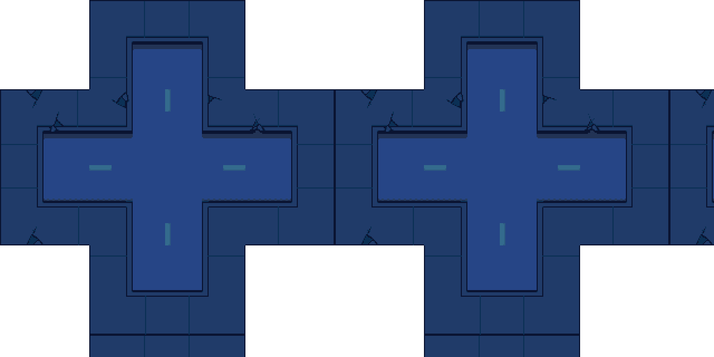
ch2.cyber_city.cyber_city_entrancecyber_city ｜ room 112bg_dw_city_alleyway_street_tiles ｜ 1280x640区域代表素材
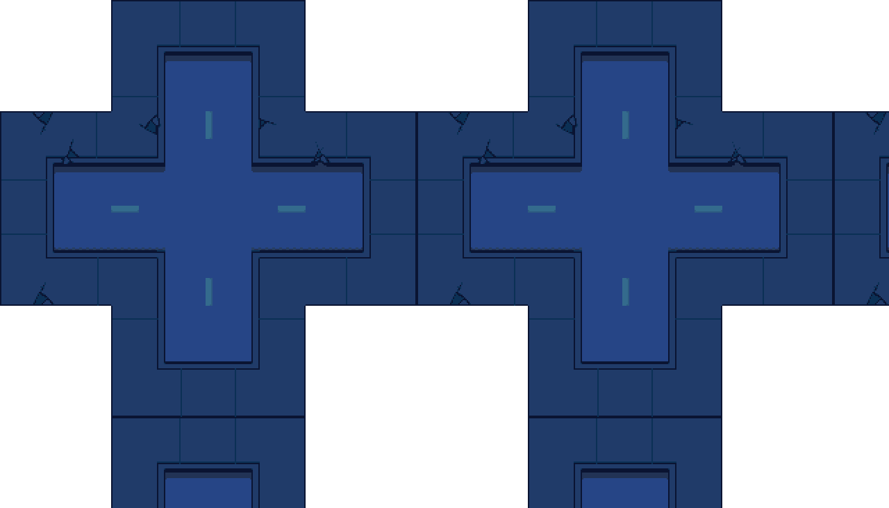
ch2.cyber_city.cyber_city_alleyway_1cyber_city ｜ room 115bg_dw_city_alleyway_street_tiles ｜ 1280x731区域代表素材

ch2.cyber_city.cyber_city_music_shopcyber_city ｜ room 121bg_dw_city_alleyway_street_tiles ｜ 1280x960区域代表素材
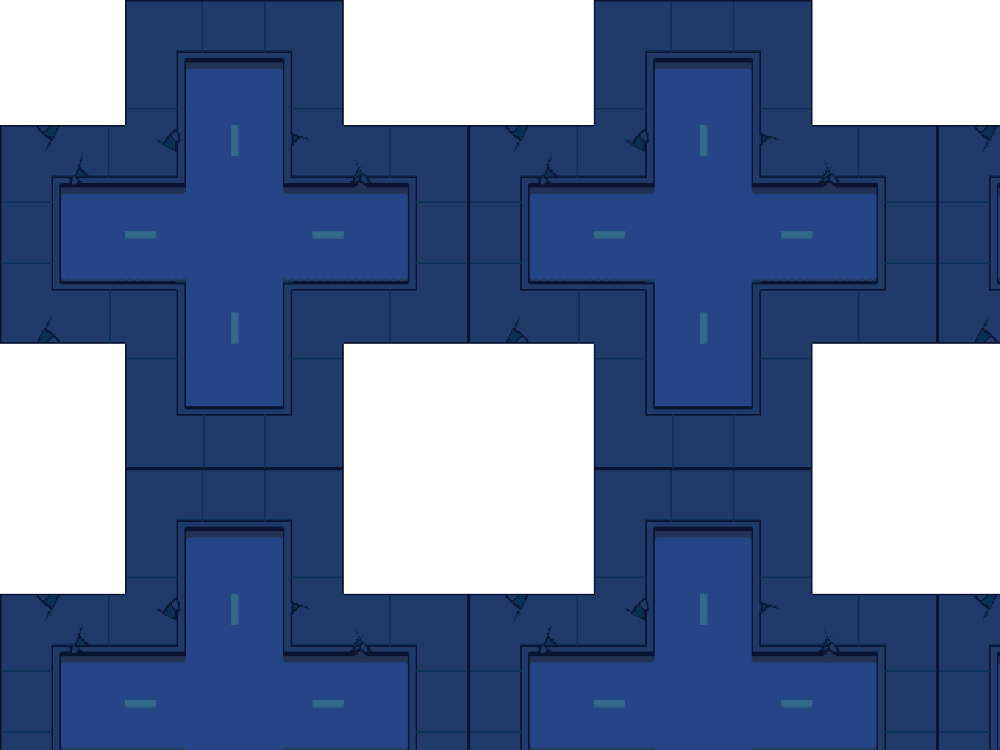
ch2.cyber_city.cyber_city_mouse_alleycyber_city ｜ room 126bg_dw_city_alleyway_street_tiles ｜ 1280x960区域代表素材

ch2.cyber_city.cyber_city_alleyway_2cyber_city ｜ room 128bg_dw_city_alleyway_street_tiles ｜ 1280x640区域代表素材
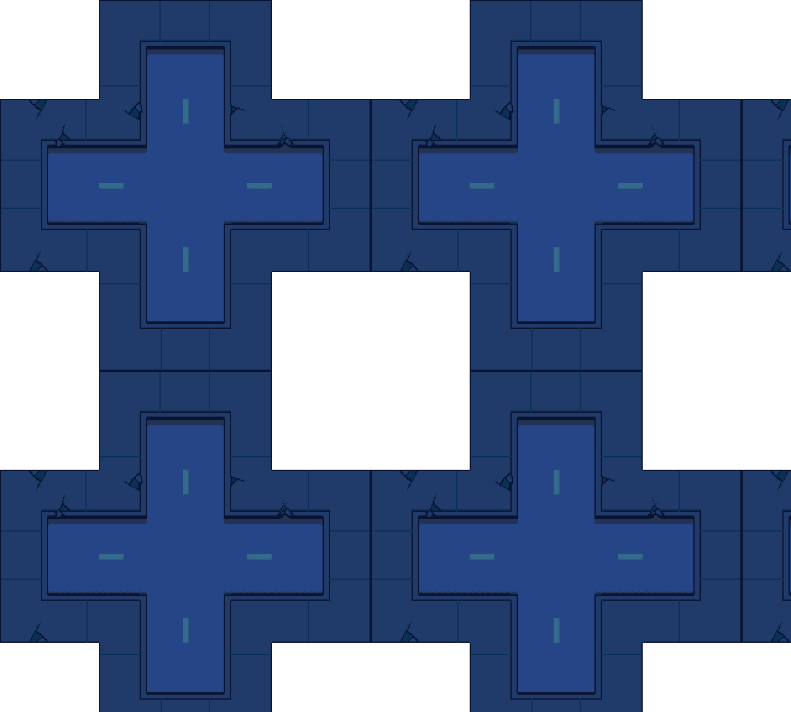
ch2.cyber_city.cyber_city_heightscyber_city ｜ room 133bg_dw_city_alleyway_street_tiles ｜ 1280x1152区域代表素材

ch2.queens_mansion.queen_s_mansion_guest_hallqueens_mansion ｜ room 152bg_dw_mansion_acid_animated_tiles_old ｜ 1280x640区域代表素材
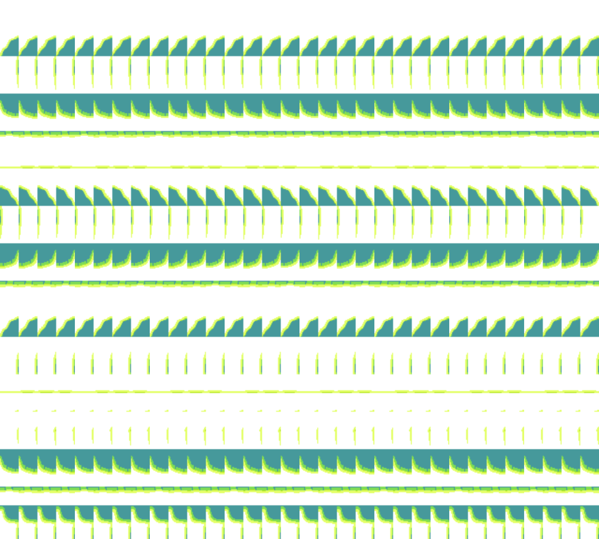
ch2.queens_mansion.queen_s_mansion_entrancequeens_mansion ｜ room 157bg_dw_mansion_acid_animated_tiles_old ｜ 1280x1152区域代表素材
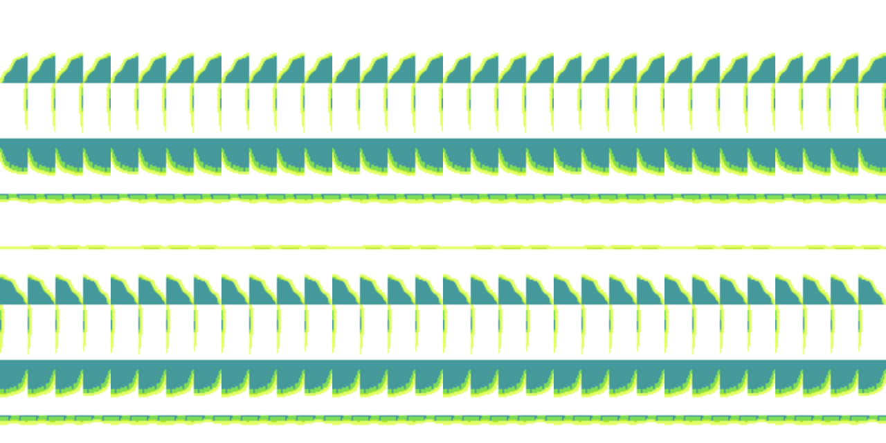
ch2.queens_mansion.queen_s_mansion_basementqueens_mansion ｜ room 171bg_dw_mansion_acid_animated_tiles_old ｜ 1280x640区域代表素材

ch2.queens_mansion.queen_s_mansion_3fqueens_mansion ｜ room 187bg_dw_mansion_acid_animated_tiles_old ｜ 1280x640区域代表素材
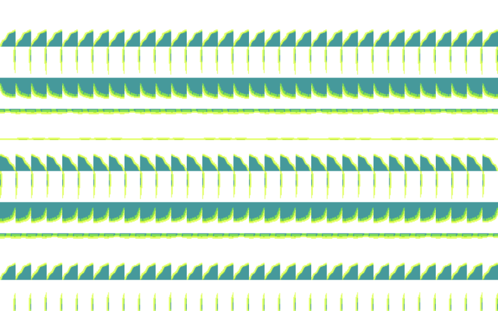
ch2.queens_mansion.queen_s_mansion_acid_tunnelqueens_mansion ｜ room 193bg_dw_mansion_acid_animated_tiles_old ｜ 1280x800区域代表素材

ch2.queens_mansion.queen_s_mansion_4fqueens_mansion ｜ room 196bg_dw_mansion_acid_animated_tiles_old ｜ 1280x640区域代表素材

ch2.queens_mansion.queen_s_mansion_rooftopqueens_mansion ｜ room 199bg_dw_mansion_acid_animated_tiles_old ｜ 1280x1152区域代表素材
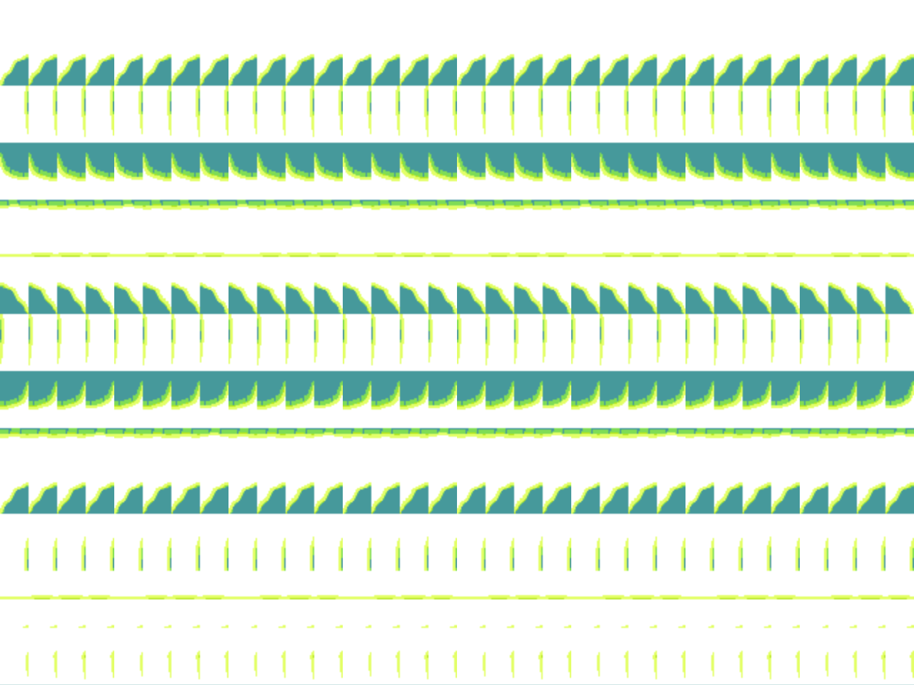
ch2.queens_mansion.queen_s_mansion_rooftop_2queens_mansion ｜ room 200bg_dw_mansion_acid_animated_tiles_old ｜ 1280x960区域代表素材

ch3.dark_world.dark_worlddark_world ｜ room 98bg_darkfield_tiles ｜ 1280x640区域代表素材

ch3.cold_place.cold_placecold_place ｜ room 109bg_dw_tvland_backstage_tiles_old ｜ 1280x640区域代表素材
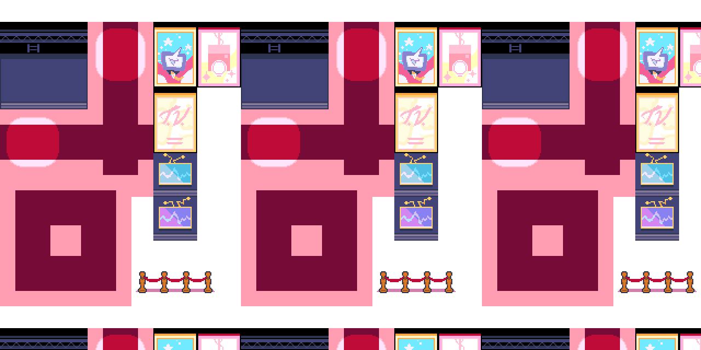
ch3.green_room.green_roomgreen_room ｜ room 135bg_dw_tvland_backstage_tiles_old ｜ 1280x640区域代表素材
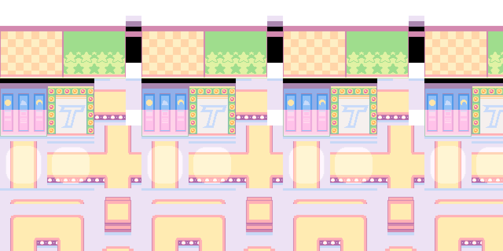
ch3.tv_world.tv_world_goulden_samtv_world ｜ room 177bg_dw_tvland_stage_tiles_old ｜ 1280x640区域代表素材

ch3.tv_world.tv_world_before_showtv_world ｜ room 194bg_dw_tvland_stage_tiles_old ｜ 1280x640区域代表素材

ch3.tv_world.tv_world_entrancetv_world ｜ room 195bg_dw_tvland_stage_tiles_old ｜ 1280x640区域代表素材

ch3.tv_world.tv_world_concerttv_world ｜ room 208bg_dw_tvland_stage_tiles_old ｜ 1280x640区域代表素材

ch3.tv_world.tv_world_cooking_showtv_world ｜ room 213bg_dw_tvland_stage_tiles_old ｜ 1280x640区域代表素材

ch4.kris_room.kris_s_roomkris_room ｜ room 15bg_myroom ｜ 320x240(原图)房间自带真背景
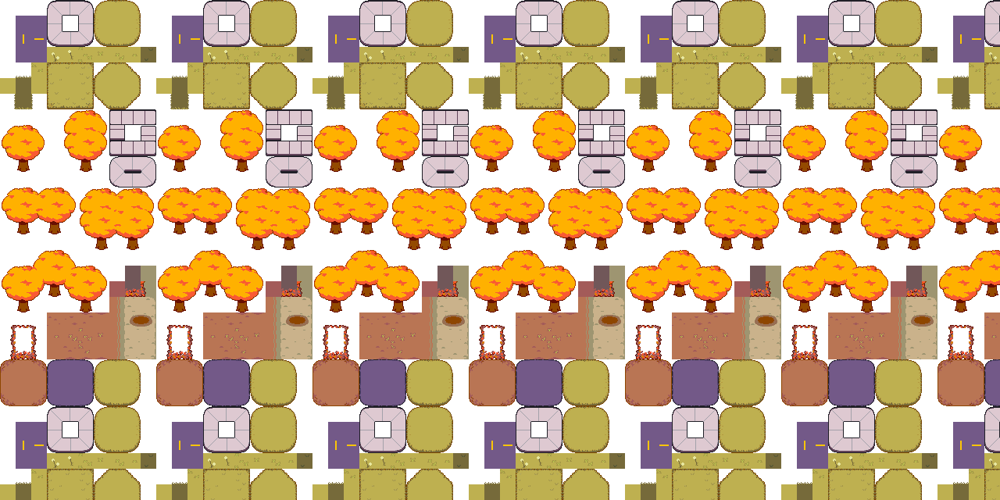
ch4.hometown.hometownhometown ｜ room 24bg_towntiles ｜ 1280x640区域代表素材
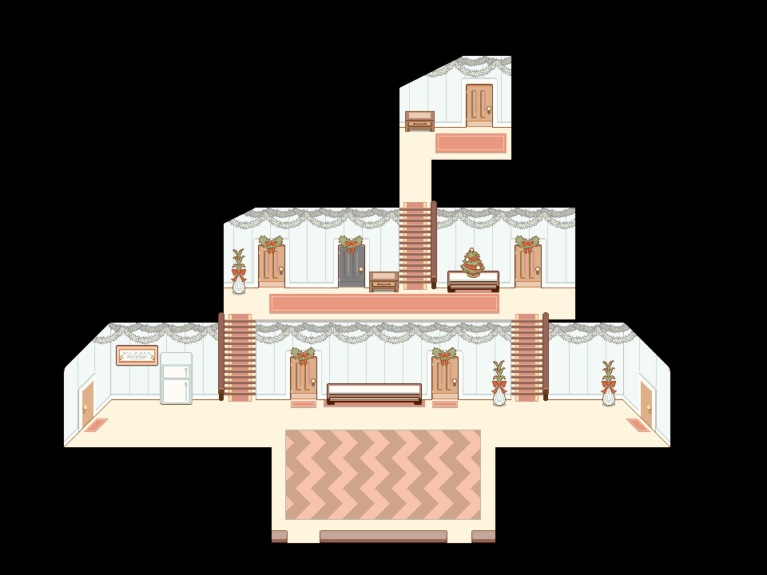
ch4.noelles_house.noelle_s_housenoelles_house ｜ room 49bg_noellehouse_main ｜ 960x720(原图)区域代表素材

ch4.my_castle_town.my_castle_townmy_castle_town ｜ room 65bg_darktown ｜ 640x1160(原图)区域代表素材

ch4.dark_sanctuary.dark_sanctuary_1_atriumdark_sanctuary ｜ room 108bg_darkfield_tiles ｜ 1280x960区域代表素材

ch4.dark_sanctuary.dark_sanctuary_1_studydark_sanctuary ｜ room 115bg_dw_gerson_base ｜ 960x1200(原图)房间自带真背景
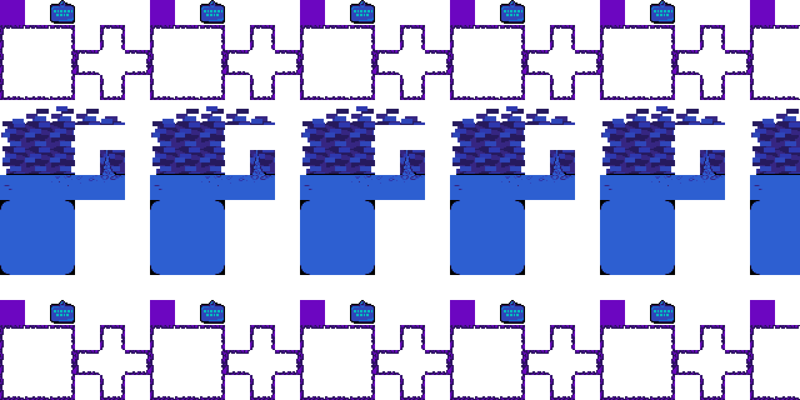
ch4.dark_sanctuary.dark_sanctuary_1_lower_leftdark_sanctuary ｜ room 177bg_darkfield_tiles ｜ 1280x640区域代表素材

ch4.dark_sanctuary.dark_sanctuary_1_small_pianodark_sanctuary ｜ room 218bg_darkfield_tiles ｜ 1280x640区域代表素材
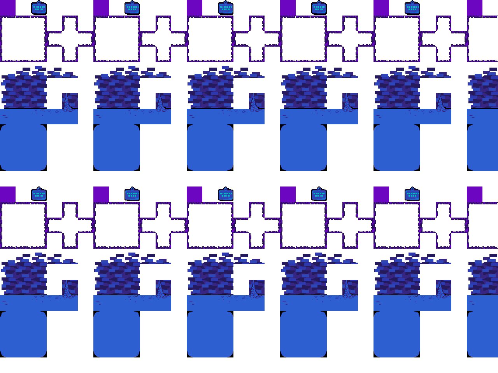
ch4.dark_sanctuary.dark_sanctuary_1_librarydark_sanctuary ｜ room 219bg_darkfield_tiles ｜ 1280x960区域代表素材
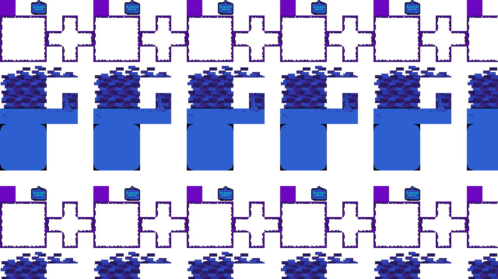
ch4.dark_sanctuary.dark_sanctuary_1_lower_rightdark_sanctuary ｜ room 227bg_darkfield_tiles ｜ 1280x720区域代表素材

ch4.second_sanctuary.sanctuary_2_atriumsecond_sanctuary ｜ room 247bg_darktiles1 ｜ 1280x960区域代表素材

ch4.second_sanctuary.sanctuary_2_floorsecond_sanctuary ｜ room 251bg_darktiles1 ｜ 1280x640区域代表素材

ch4.second_sanctuary.sanctuary_2_studysecond_sanctuary ｜ room 257bg_darktiles1 ｜ 1280x1152区域代表素材
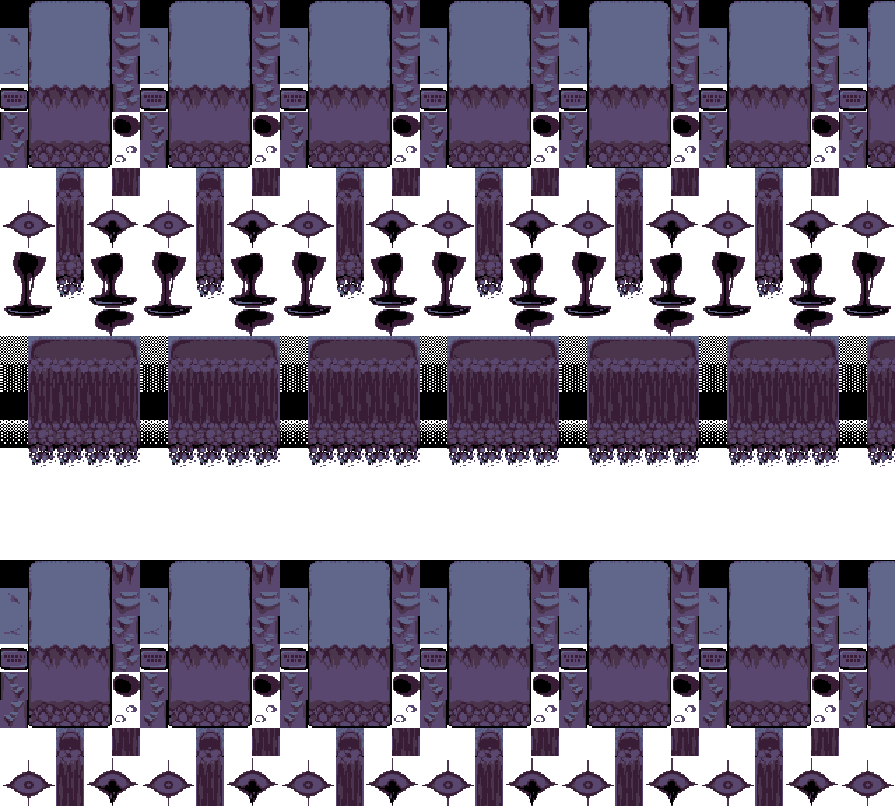
ch4.second_sanctuary.sanctuary_2_study_2second_sanctuary ｜ room 304bg_darktiles1 ｜ 1280x1152区域代表素材

ch4.third_sanctuary.sanctuary_3third_sanctuary ｜ room 270bg_darktiles1 ｜ 1280x1152区域代表素材

ch4.third_sanctuary.sanctuary_3_stairsthird_sanctuary ｜ room 277bg_darktiles1 ｜ 1280x1152区域代表素材

ch4.third_sanctuary.sanctuary_3_last_chamberthird_sanctuary ｜ room 280bg_darktiles1 ｜ 1280x1152区域代表素材
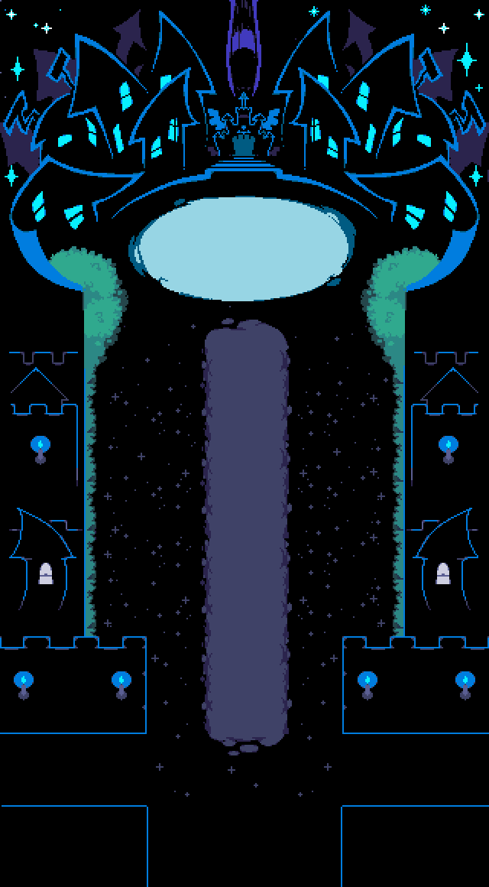
ch4.castle_town.castle_town_tv_buildingcastle_town ｜ room 298bg_darktown ｜ 640x1160(原图)区域代表素材

ch4.mike_zone.mike_zonemike_zone ｜ room 322bg_darkfield_tiles ｜ 1280x1152区域代表素材

ch5.kris_room.kris_s_roomkris_room ｜ room 13bg_myroom ｜ 320x240(原图)房间自带真背景

ch5.hometown.hometownhometown ｜ room 24bg_towntiles ｜ 1280x640区域代表素材
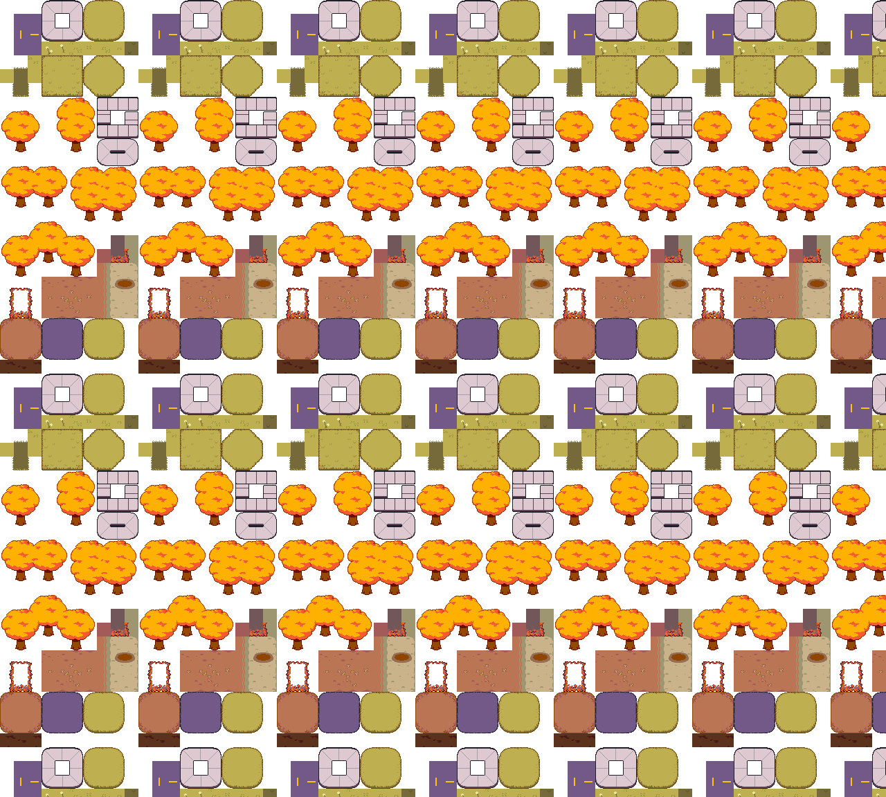
ch5.my_castle_town.my_castle_townmy_castle_town ｜ room 54bg_towntiles ｜ 1280x1152区域代表素材

ch5.castle_town.castle_town_tv_buildingcastle_town ｜ room 112bg_towntiles ｜ 1280x640区域代表素材
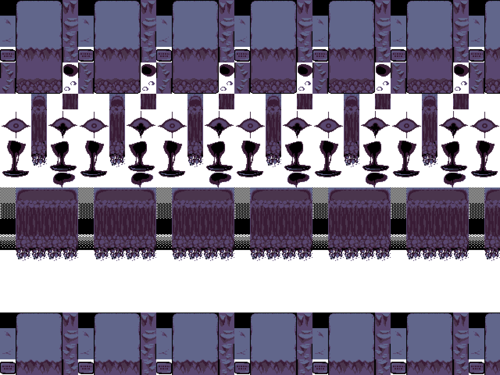
ch5.dark_world.dark_worlddark_world ｜ room 120bg_darktiles1 ｜ 1280x960区域代表素材
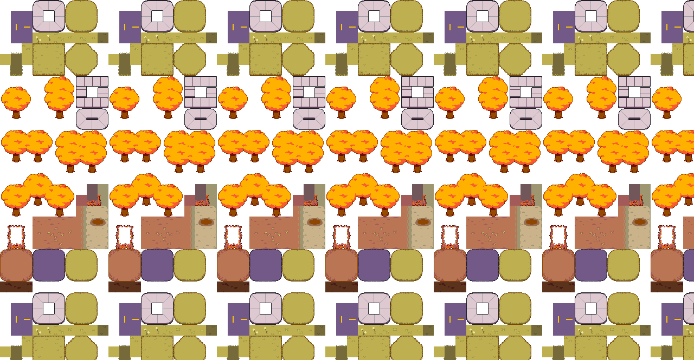
ch5.garden.garden_beginninggarden ｜ room 122bg_towntiles ｜ 1280x665区域代表素材
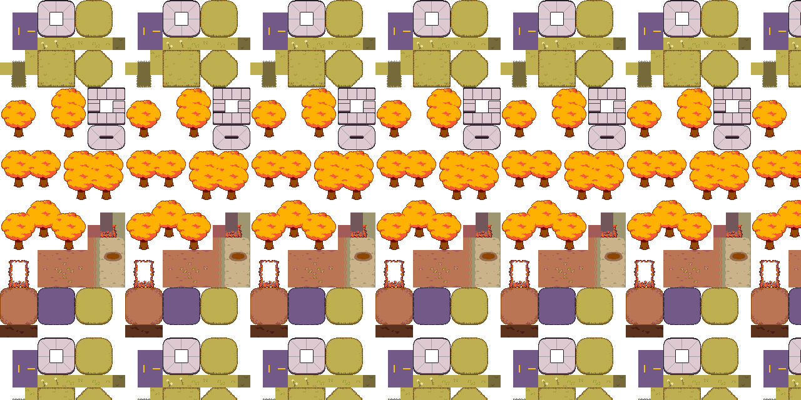
ch5.garden.garden_flowery_helpedgarden ｜ room 129bg_towntiles ｜ 1280x640区域代表素材

ch5.garden.garden_ideal_dinergarden ｜ room 133bg_towntiles ｜ 1280x640区域代表素材

ch5.garden.garden_shrinegarden ｜ room 141bg_towntiles ｜ 1280x1152区域代表素材

ch5.garden.garden_way_homegarden ｜ room 150bg_towntiles ｜ 1280x640区域代表素材
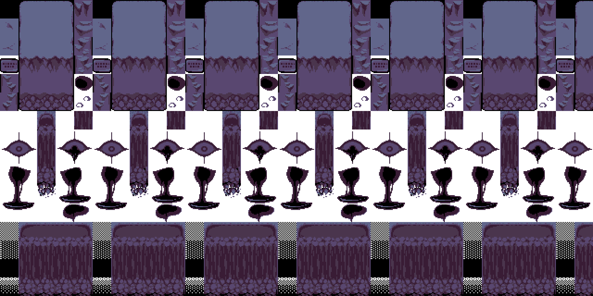
ch5.cliffs.cliffs_beginningcliffs ｜ room 144bg_darktiles1 ｜ 1280x640区域代表素材

ch5.cliffs.cliffs_shopcliffs ｜ room 161bg_darktiles1 ｜ 1280x960区域代表素材

ch5.cliffs.cliffs_below_castlecliffs ｜ room 167bg_darktiles1 ｜ 1280x960区域代表素材
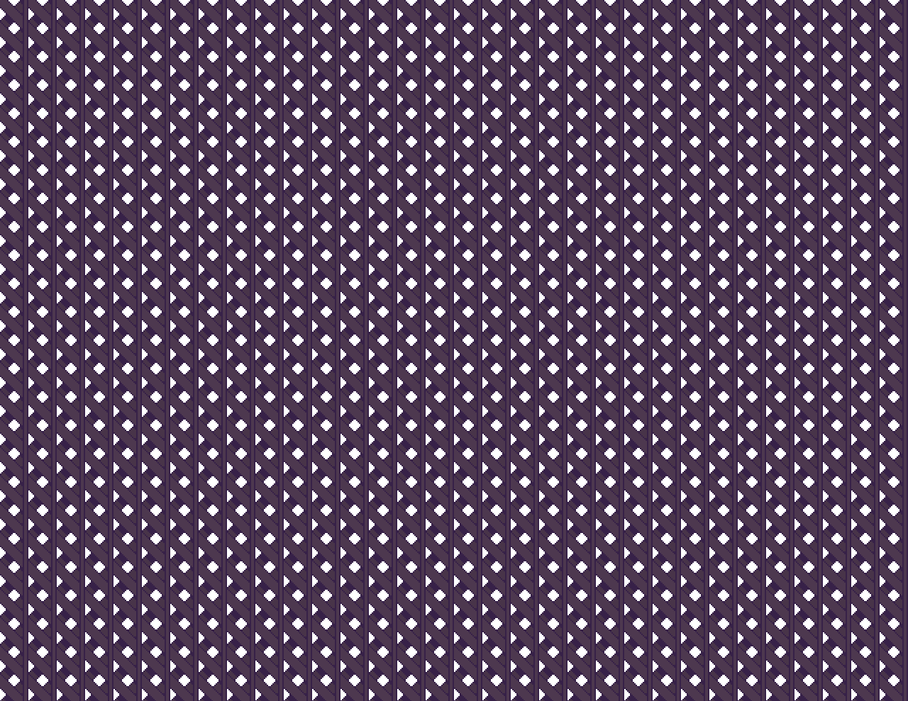
ch5.flower_castle.flower_castle_cafeflower_castle ｜ room 177bg_fcastle_flower_tower_lattice_tiles_split ｜ 1280x989区域代表素材

ch5.flower_castle.flower_castle_jailflower_castle ｜ room 179bg_fcastle_flower_tower_lattice_tiles_split ｜ 1280x640区域代表素材
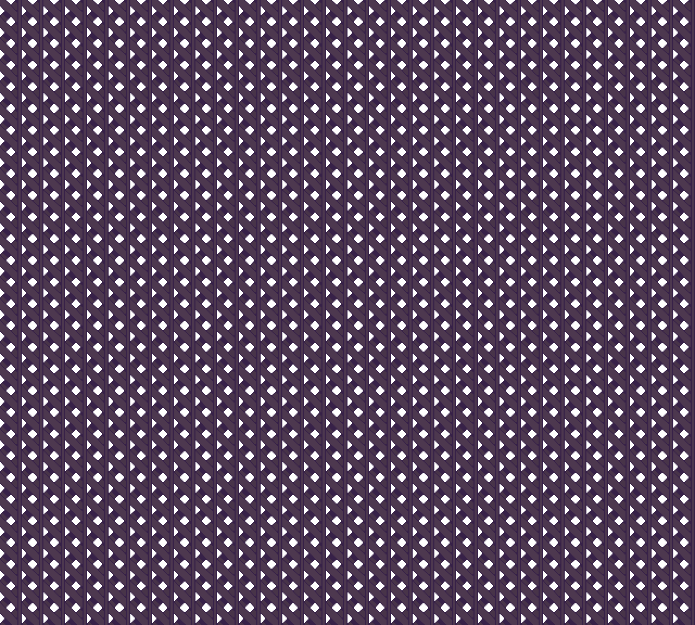
ch5.flower_castle.flower_castle_left_doorsflower_castle ｜ room 183bg_fcastle_flower_tower_lattice_tiles_split ｜ 1280x1152区域代表素材

ch5.flower_castle.flower_castle_left_stageflower_castle ｜ room 187bg_fcastle_flower_tower_lattice_tiles_split ｜ 1280x640区域代表素材

ch5.flower_castle.flower_castle_left_endflower_castle ｜ room 189bg_fcastle_flower_tower_lattice_tiles_split ｜ 1280x640区域代表素材
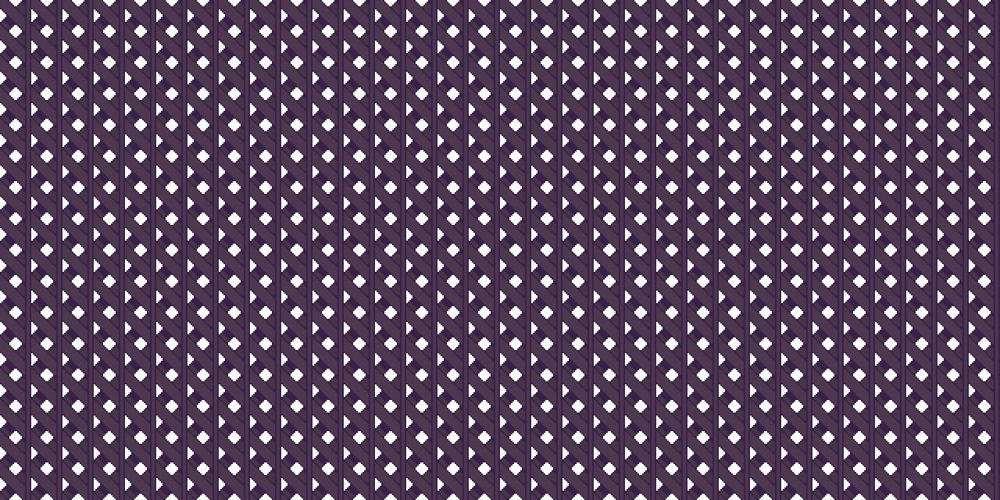
ch5.flower_castle.flower_castle_right_dinerflower_castle ｜ room 202bg_fcastle_flower_tower_lattice_tiles_split ｜ 1280x640区域代表素材

ch5.flower_castle.flower_castle_right_endflower_castle ｜ room 207bg_fcastle_flower_tower_lattice_tiles_split ｜ 1280x640区域代表素材